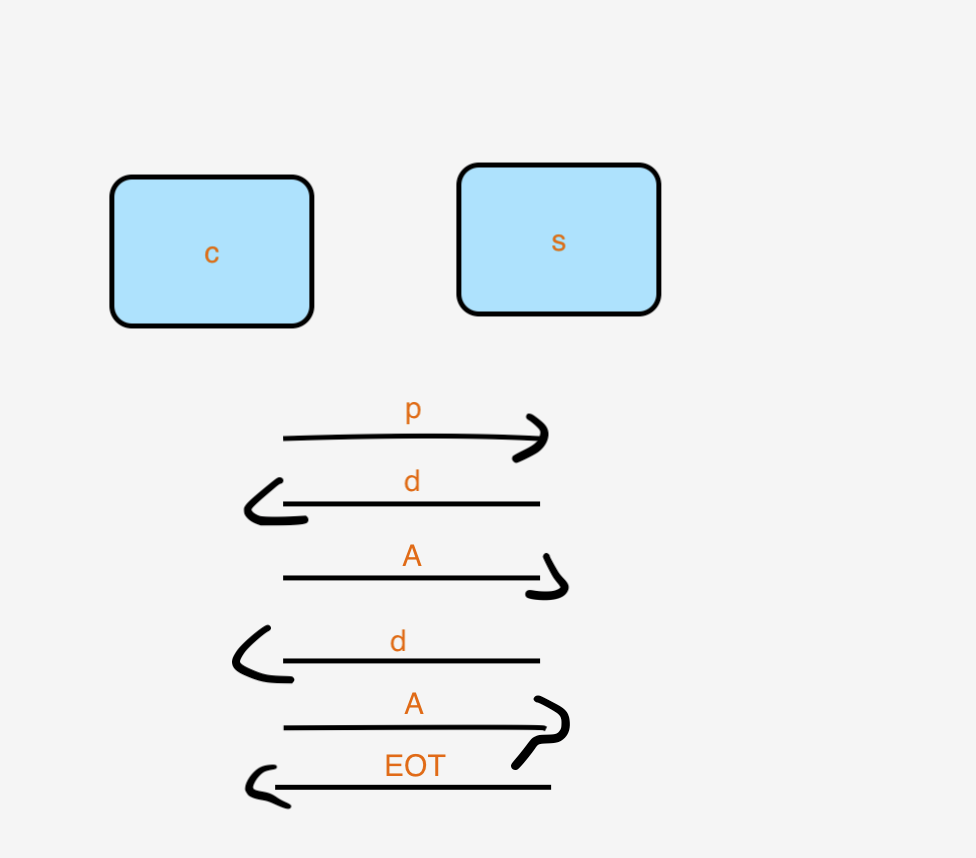

socket
如图所示，socket 可以理解为中间层。底层是若干不同的协议来完成协议族的指定，上层可以是不同的网络实现方式（流失传输，报式传输等等）。在不同的协议族当中对于这些不同的网络实现方式都会有支持，比如IPv4既能支持流失套接字，也能支持报式套接字等等。这样的话，下层换一种协议，上层换一种实现方式，程序员都要新写一套代码。
解决方法：
借助一种机制，把下面用什么协议族，上面用什么实现方式指定起来，这样的机制就是socket。socket函数抽象出来 是一个文件描述符，也就是说拿着一个文件描述符就能完成套接字传输的问题。
对文件描述符的操作无非：
打开
还有相关的函数能把文件描述符封装到流当中，封装成FILE *。 通过stream 的概念来操作，这个时候就能使用标准IO了。只要是文件，标准io和系统调用io都能拿来使用了。
说到守护进程，为什么写守护进程不把所有文件描述符关掉呢，因为守护进程脱离控制终端。（因为在apue某个版本上的demo上，有把1024个文件描述符都关闭掉的实现。）因为写守护进程，多半与传输有关系，和socket都会产生或多或少的关联。那关掉文件描述符的是没有必要的。所以写程序的时候主要还是要看目的。不要盲目的模仿
1.1 跨主机的传输要注意的问题
字节序， 对齐问题
前面讨论了进程间通讯（IPC）的各种常用手段，但是那些手段都是指通讯双方在同一台机器上的情况。在现实生活中我们会经常接触到各种各样的网络应用程序，比如大家经常使用的 ftp、svn、甚至QQ、迅雷等等，它们的通讯双方通常都是在不同的机器上的，那么它们的通讯就是跨主机的进程间通讯了，所以网络通讯也是一种进程间通讯的手段。
跨主机的程序在传输数据之前要制定严谨的协议，不然对方可能会看不懂你发送的数据，从而导致数据传送失败，甚至造成安全类bug，所以跨主机的通讯就不像我们之前学习的在同一台主机上的进程间通讯那么简单了。
制定协议要考虑的问题至少包括以下几点：
1）告诉对方自己的 IP 和端口；
先来看看 IP 和端口的概念。
当我们的程序在进行网络通讯之前，需要先与自己的机器进行约定，告诉操作系统我需要使用哪个端口，这样操作系统的某个端口在收到数据的时候就会发送给我们的进程。当另一个程序也来通知操作系统它要使用这个端口时，操作系统要保证这个端口只有我们使用而不能再让别人使用，否则当它收到数据的时候就不知道应该发送给谁了。
当我们需要发送数据的时候，也会使用这个端口进行发送，只有特殊情况才会使用别的端口或者使用多个端口。
1.1.1 类型长度问题 2）还要考虑的问题是通信的双方应该采用什么数据类型呢？
假如通讯双方要传送一个 int 类型的数据，那么对方机器上 int 类型的位数与我们机器上的位数是否相同呢？
也就是说 int 类型在我的机器上是 32bit，但是在对方的机器上也是 32bit 吗？假设在对方机器上是 16bit，那么我发送给它的 int 值它能正确解析吗？
解决方法
使用一些通用类型的数值
int32_t
uint32_t
int64_t
int8_t
uint8_t
所以通信双方的数据类型要采用完全一致的约定，这个我们在下面会讨论如何让数据类型一致。
1.1.2 字节序问题： 大端存储，小端存储 大端存储： 低地址处放高字节
还要考虑字节序问题，这个说的是大小端的问题。
大端格式是：低地址存放高位数据，高地址存放低位数据。
小端格式是：低地址存放低位数据，高地址存放高位数据。
图1 大小端
如图1 所示，假设要存放的数据是一个16进制的数值， 0x30313233，那么 33 是低位，30 是高位，在大端存储格式中，30 存放在低位，33 存放在高位；而在小端存储格式中，33 存放在低位，30 存放在高位。
大小端存储跟发送的区别，不管是文件传输的时候，还是io来实现的时候，永远是低地址的数据先出去，高地址的数据后出去。就这有问题了，比如我现在发出去的一个数据是小端格式存放的。结果发到你那里去之后，你将它当作大端格式来接收。0x30313233 当大端存储的格式来接收，和按小端格式来接收的结果是天差地别的。解决的思路是 不再严格的去区分到底是大端存储还是小端存储，区分主机字节序和网络字节序；
主机字节序： host
这个东西有什么作用呢？它其实就是我们使用的网络设备（计算机、平板电脑、智能手机等等）在内存当中存储数据的格式。所以如果通讯双方的设备存储数据的格式不同，那么一端发送过去的数据，另一端是无法正确解析的，这可怎么办呢？
没关系，还好系统为我们准备了一组函数可以帮我们实现字节序转换，我们可以像使用公式一样使用它们。
1 2 3 4 5 6 7 8 #include <arpa/inet.h> uint32_t htonl (uint32_t hostlong) uint16_t htons (uint16_t hostshort) uint32_t ntohl (uint32_t netlong) uint16_t ntohs (uint16_t netshort)
_ to __:
当前pc机上的内容要上传网络传给对端的话，当前就应该是主机序转网络序；
这组函数的名字好奇怪是吧，所以为了便于记忆，在讨论它们的功能之前我们先来分析一下它们名字里的玄机：
h 是 host，表示主机；n 是 network，表示网络。l 表示 long，s 表示 short。
这样一来就好理解多了吧？它们的作用从名字中就可以看出来了，
网路字节序一般都是大端的，而主机字节序则根据硬件平台的不同而不同（在 x86 平台和绝大多数的 ARM 平台都是小端）。所以为了简化我们编程的复杂度，这些函数的内部会根据当前机器的结构自动为我们选择是否要转换数据的字节序。我们不用管到底我们自己的主机采用的是什么字节序，只要是从主机发送数据到网络就需要调用 hton 函数，从网络接收数据到主机就需要调用 ntoh 函数。
1.1.3 对齐问题 4）最后一项约定是结构体成员不对齐，由于数据对齐也是与硬件平台相关的，所以不同的主机如果使用不同的对齐方式，就会导致数据无法解析。
解决的办法
不对齐
如何使数据不对齐呢，只需要在定义结构体的时候在结尾添加 attribute ((packed)) 就可以了，见如下栗子：
1 2 3 4 5 6 { uint8_t name[NAMESIZE]; uint32_t math; uint32_t chinese; }__attribute__((packed));
网络传输的结构体中的成员都是紧凑的，所以不能地址对齐，需要在结构体外面增加 attribute ((packed))。
关于字节对齐的东西就足够写一篇博文了，LZ 在这里仅仅简单介绍一下什么是字节对齐，如果感兴趣大家可以去查阅专门的资料。
结构体的地址对齐是通过 起始地址 % sizeof(type) == 0 这个公式计算的，也就是说存放数据的起始地址位于数据类型本身长度的整倍数。
1.2 报式套接字(UDP) 从进程间通信开始，我们写程序就是一步一步按部就班的写就可以了，编写网络应用也一样，网络通信本质上就是一种跨主机的进程间通信（IPC）。
前面我们了解了主动端和被动端的概念，那么接下来看看在 Socket 中主动端和被动端都要做什么。
1 2 3 4 5 6 7 8 9 10 11 12 13 14 15 16 17 18 19 20 21 主动端（先发包的一方） 1.取得 Socket 2.给 Socket 取得地址（可省略， 给socket取得地址指的是绑定本地地址，不必与操作系统约定端口，由操作系统指定随机端口） 3.发/收消息 4.关闭 Socket 被动端（先收包的一方，程序需要先运行） 1.取得 Socket 2.给 Socket 取得地址 （绑定地址） 3.收/发消息 4.关闭 Socket
proto.h 里面主要是通讯双方约定的协议，包含端口号、传送数据的结构体等等。
1 2 3 4 5 6 7 8 9 10 11 12 13 14 15 16 17 18 19 20 #ifndef PROTO_H__ #define PROTO_H__ #include <stdint.h> #define RCVPORT "1989" #define NAMESIZE 13 struct msg_st { uint8_t name[NAMESIZE]; uint32_t math; uint32_t chinese; }__attribute__((packed)); #endif
rcver.c 是被动端的代码，也是通讯双方先启动的一端。
1 2 3 4 5 6 7 8 9 10 11 12 13 14 15 16 17 18 19 20 21 22 23 24 25 26 27 28 29 30 31 32 33 34 35 36 37 38 39 40 41 42 43 44 45 46 47 48 49 50 51 52 53 54 55 #include <stdio.h> #include <stdlib.h> #include <arpa/inet.h> #include <sys/types.h> #include <sys/socket.h> #include "proto.h" #define IPSTRSIZE 64 int main () int sd; struct sockaddr_in laddr ,raddr ; socklen_t raddr_len; struct msg_st rbuf ; char ipstr[IPSTRSIZE]; sd = socket(AF_INET,SOCK_DGRAM, 0 ); if (sd < 0 ) { perror("socket()" ); exit (1 ); } laddr.sin_family = AF_INET; laddr.sin_port = htons(atoi(RCVPORT)); inet_pton(AF_INET,"0.0.0.0" ,&laddr.sin_addr.s_addr); if (bind(sd,(void *)&laddr,sizeof (laddr)) < 0 ) { perror("bind()" ); exit (1 ); } raddr_len = sizeof (raddr); while (1 ) { if (recvfrom(sd,&rbuf,sizeof (rbuf),0 ,(void *)&raddr,&raddr_len) < 0 ) { perror("recvfrom()" ); exit (1 ); } inet_ntop(AF_INET,&raddr.sin_addr,ipstr,IPSTRSIZE); printf ("---MESSAGE FROM:%s:%d---\n" ,ipstr,ntohs(raddr.sin_port)); printf ("Name = %s\n" ,rbuf.name); printf ("Math = %d\n" ,ntohl(rbuf.math)); printf ("Chinese = %d\n" ,ntohl(rbuf.chinese)); } close (sd); exit (0 ); }
1 2 $> ./rcver $> netstat -anu
snder.c 是主动端，主动向另一端发送消息。这端可以不用向操作系统绑定端口，发送数据的时候由操作系统为我们分配可用的端口即可，当然如果想要自己绑定特定的端口也是可以的。
1 2 3 4 5 6 7 8 9 10 11 12 13 14 15 16 17 18 19 20 21 22 23 24 25 26 27 28 29 30 31 32 33 34 35 36 37 38 39 40 41 42 43 44 45 46 47 48 49 50 51 52 53 #include <stdio.h> #include <stdlib.h> #include <arpa/inet.h> #include <sys/types.h> #include <sys/socket.h> #include <string.h> #include "proto.h" int main (int argc,char **argv) int sd; struct msg_st sbuf ; struct sockaddr_in raddr ; if (argc < 2 ) { fprintf (stderr ,"Usage...\n" ); exit (1 ); } sd = socket(AF_INET,SOCK_DGRAM,0 ); if (sd < 0 ) { perror("socket()" ); exit (1 ); } memset (&sbuf,'\0' ,sizeof (sbuf)); strcpy (sbuf.name,"Alan" ); sbuf.math = htonl(rand()%100 ); sbuf.chinese = htonl(rand()%100 ); raddr.sin_family = AF_INET; raddr.sin_port = htons(atoi(RCVPORT)); inet_pton(AF_INET,argv[1 ],&raddr.sin_addr); if (sendto(sd,&sbuf,sizeof (sbuf),0 ,(void *)&raddr,sizeof (raddr)) < 0 ) { perror("sendto()" ); exit (1 ); } puts ("ok!" ); close (sd); exit (0 ); }
由这三个文件组成的程序就可以进行网络通讯了，不知道大家有没有注意到，无论是发送端还是接收端，执行的步骤都是固定的，将来大家在开发更复杂的网络应用时也是基于这几个步骤进行扩展。
根据上面的代码中协议（proto.h）的定义，我们知道其中 msg_st 结构体中 name 成员的长度是固定的，这样并不好用，那么我们就把它修改为变长结构体。
修改成变长结构体很简单，只需把变长的部分放到结构体的最后面，然后通过 malloc(3) 动态内存管理来为它分配我们需要的大小。如下所示：
1 2 3 4 5 6 struct msg_st { uint32_t math; uint32_t chinese; uint8_t name[1 ]; }__attribute__((packed));
UDP 包常规的最大尺寸是 512 字节，去掉包头的 8 个字节，再去掉结构体中除了最后一个成员以外其它成员大小的总和，剩下的就是我们最后一个成员最大能分配的大小。
大家还记得如何操作一个文件吗？
1.首先通过 open(2) 函数打开文件，并获得文件描述符；
2.通过 read(2)、write(2) 函数读写文件；
3.调用 close(2) 函数关闭文件，释放相关资源。
没错，在 Linux 的一切皆文件的设计理念中，网络也是文件，网络之间的通讯也可以像操作文件一样，对它进行读写。
在网络程序中，通常步骤是这样的：
1.首先通过 socket(2) 函数获得 socket 文件描述符；
2.通过 send(2)、sendto(2)、recv(2)、recvfrom(2) 等函数读写数据，这一步就相当于在网络上收发数据了。
3.调用 close(2) 函数关闭网络，释放相关资源。你没看错，这个函数就是我们关闭文件描述符的时候使用的函数。
下面我们依次介绍上面遇到的各种函数。
1.2.1 socket函数 1 2 3 4 5 6 #include <sys/types.h> /* See NOTES */ #include <sys/socket.h> int socket (int domain, int type, int protocol)
socket(2) 函数是用来获取对网络操作的文件描述符的，就像 open(2) 函数一样。
参数列表：
domain：协议族/地址族；
type：上层如何进行实现/链接方式；
protocol：具体使用哪个协议。在 domain 的协议族中每一个对应的 type 都有一个或多个协议，使用协议族中默认的协议可以填写 0。
用 domain（协议族）中的 某种 protocol（具体哪个协议）进行 type类型的传输
返回值：如果成功，返回的是一个代表当前网络链接的文件描述符，你要保存好它，因为后续的网络操作都需要它。如果失败，返回 -1，并设置 errno。
下面就是 Linux 支持的协议族，也就是 domain 参数可以选择的宏，它们都定义在 sys/socket.h 头文件中，所以想要使用下面的宏不要忘记包含这个头文件哟。
1 2 3 4 5 6 7 8 9 10 11 12 13 14 15 16 17 18 19 20 AF_UNIX、AF_LOCAL：本地协议；通过 man 7 unix 可以得到有关这个协议族更详细的描述。 AF_INET：IPV4 协议；这是我们最常见的协议族，通过 man 7 ip 可以得到有关这个协议族更详细的描述。 AF_INET6：IPV6 协议；，通过 man 7 ipv6 可以得到有关这个协议族更详细的描述。 AF_IPX：Novell 当年是网络的代名词，是非常古老的操作系统，出现在 TCP/IP 之前； AF_NETLINK：是用户态与内核态通信的协议； AF_X25：这是很早的协议，感兴趣的话可以自己去 Google 一下； AF_AX25：应用于业余无线电，也称为短波通信，都是一些无线电爱好者使用的协议。据说汶川地震时灾区所有通讯都瘫痪了，第一个求救信号就是短波发送出来的，因为这些无线电爱好者家里一般都有大大小小的发电机。 AF_ATMPVC：当年如日中天，后来死于封闭。协议设计得非常好，后来几家公司都为了拿大头就僵持起来，谁都没有推广它，就在这时候以太网发展起来了，就把它打败了。以太网发展起来就是因为很简陋，所以更容易推广。 AF_APPLETALK：苹果使用的一个局域网协议； AF_PACKET：底层 socket 所用到的协议，比如抓包器所遵循的协议一定要在网卡驱动层，而不能在应用层，否则无法见到包封装的过程。再比如 ping(1) 命令大家都熟悉吧，想要实现 ping(1) 命令就需要了解这个协议族，感兴趣的话大家可以自行 Google 一下。
如果想要对网络编程进行更深入的学习，那么《APUE》作者写的《UNIX 网络编程》有必要读一遍；《TCP/IP详解》三卷也要读一下，但是这三卷都很难读，而且翻译质量也一般，可以买一本中文的再找一本英文电子版的，遇到中文的读不通的时候拿出来英文原文对照一下就可以了。
下面我们看一下 type 参数有哪些可选项：
1 2 3 4 5 6 7 8 9 10 11 12 13 14 15 16 17 18 19 20 21 22 23 24 25 26 SOCK_STREAM：流式套接字，特点是有序、可靠。有序、双工、基于链接的、以字节流为单位的。 可靠不是指不丢包，而是流式套接字保证只要你能接收到这个包，那么包中的数据的完整性一定是正确的。 双工是指双方都能收发。 基于链接的是指：比如大街上张三、李四进行对话，一定不会说每句话之前都叫着对方的名字。也就是说通信双方是知道对方是谁的。 字节流是指数据没有明显的界限，一端数据可以分为任意多个包发送。 SOCK_DGRAM：报式套接字，无链接的，固定的最大长度，不可靠的消息。 就像写信，无法保证你发出的信对方一定能收到，而且无法保证内容不会被篡改。如果今天发了一封信，明天又发了一封信，不能保证哪封信先到。大家都能收到这个包，但是发现不是自己的之后就会丢弃，发现是自己的包再处理，有严格的数据分界线。更详细的解释可以参阅 man 手册。 SOCK_SEQPACKET：提供有序、可靠、双向基于连接的数据报通信。 SOCK_RAW：原始的套接字，提供的是网络协议层的访问。 SOCK_RDM：数据层的访问，不保证传输顺序。 SOCK_PACKET：不好用，具体的 bug 要查 man 7 packet。
bind(2)
1 2 3 4 5 6 7 8 9 10 11 12 #include <sys/types.h> /* See NOTES */ #include <sys/socket.h> int bind (int sockfd, const struct sockaddr *addr, socklen_t addrlen) struct sockaddr { sa_family_t sa_family; char sa_data[14 ]; }
bind(2) 函数用于绑定本机端口，就是提前跟操作系统约定好，来自 xx 端口的数据都要转交给我（当前进程）处理，并且我占用了这个端口号别人（其它进程）就不能再使用了。
参数列表：
sockfd：刚刚使用 socket(2) 函数得到的文件描述符，表示要对该网络链接绑定端口。
addr：要绑定到套接字上的地址。根据不同的协议要在 man 手册第 7 章查阅具体的章节，然后在 Address Types 一栏里面找到对应的结构体。比如你在调用 socket(2) 函数的时候，domain 参数选择的是 AF_INET，那么这个结构体就可以在 man 手册 ip(7) 章节中找到。
addrlen：addr 传递的地址结构体的长度。
以 AF_INET 为例，下面这两个结构体就是在 ip(7) 中找到的。
1 2 3 4 5 6 7 8 9 10 struct sockaddr_in { sa_family_t sin_family; in_port_t sin_port; struct in_addr sin_addr ; }; struct in_addr { uint32_t s_addr; };
大家可以看到，这个结构体的类型是 struct sockaddr_in，而 bind(2) 函数的第二个参数 的类型是 struct sockaddr，它们二者有什么关系呢？别瞎想，不是继承关系啦，C 语言中没有继承这种东东。在传参的时候直接把实参强转为 void* 类型即可，就像上面栗子中 rcver.c 写得那样。
recv(2) 和 recvfrom(2) 函数
1 2 3 4 5 6 7 8 9 10 11 #include <sys/types.h> #include <sys/socket.h> ssize_t recv (int sockfd, void *buf, size_t len, int flags) ssize_t recvfrom (int sockfd, void *buf, size_t len, int flags, struct sockaddr *src_addr, socklen_t *addrlen)
这两个函数的作用是从网络上接收内容并写入 len 个字节长度的数据到 buf 中，且将发送端的地址信息填写到 src_addr 中。
返回值是真正能接收到的字节数，返回 -1 表示失败。
recv(2) 函数一般用在流式（SOCK_STREAM）套接字中，而 recvfrom(2) 则一般用在报式（SOCK_DGRAM）套接字中。很明显 recv(2) 函数并没有地址相关的参数，因为是提前建立好连接的一对一点对点的，所以不必记录每次对方是谁。
recvfrom 函数用在报式套接字当中，比如做一下现场答疑，有10个学生在提问问题，每个学生提问的问题不一致，也就说是说话的来源不一致，大家说话是带着自己身份来的。比如a同学的请求，要把回答信息准备回递给a同学。b同学的请求要回递给b同学，这点跟流式套接字不同，流式套接字已经建立一对一点对点的传输了。 需要记录对端的地址和地址长度。
为什么这么说呢，还记得上面我们提到过吗，流式套接字是基于链接的，而报式套接字是无链接的。
网络中的数据只有单字节数据不用考虑字节序，从网络上接收过来的数据只要涉及到字节序就需要使用 ntoh 系列函数进行字节序转换。这一组函数我们上面介绍过了，没记住的童鞋可以往上翻。
1 2 3 4 5 小提示：通过 netstat(1) 命令 ant 参数可以查看 TCP 链接情况，或通过 netstat(1) 命令 anu 参数可以查看 UDP 链接情况。 t 参数表示 TCP； u 参数表示 UDP；
send(2) 和 sendto(2) 函数
1 2 3 4 5 6 7 8 9 #include <sys/types.h> #include <sys/socket.h> ssize_t send (int sockfd, const void *buf, size_t len, int flags) ssize_t sendto (int sockfd, const void *buf, size_t len, int flags, const struct sockaddr *dest_addr, socklen_t addrlen)
这两个函数与 recv(2) 和 recvfrom(2) 函数正好是对应的，它们的作用是向网络上发送数据。
参数列表：
sockfd：通过哪个 Socket 往外发数据，这个参数的值就是在调用 socket(2) 函数的时候取得的；
buf：要发送的数据；
len：要发送的数据的长度；
flags：特殊要求，没有填 0；
src_addr：目标地址；就像上面我们讨论 bind(2) 函数时一样，具体使用哪个结构体要根据你在调用 socket(2) 函数的时候使用的具体协议族有关系，然后到对应的 man 手册第 7 章去查找。
addrlen：目标地址的长度；
返回值是真正发送出去的数据的长度；出现错误返回 -1 并设置 errno。
1 2 3 4 5 6 7 8 9 10 11 12 13 14 15 16 17 18 19 20 21 22 23 24 25 26 27 28 29 #ifndef PROTO_H__ #define PROTO_H__ #include <stdint.h> #define RCVPORT "1989" #define NAMEMAX 512-8-8 #define NAMESIZE 13 struct msg_st { uint32_t math; uint32_t chinese; uint8_t name[1 ]; }__attribute__((packed)); #endif
1 2 3 4 5 6 7 8 9 10 11 12 13 14 15 16 17 18 19 20 21 22 23 24 25 26 27 28 29 30 31 32 33 34 35 36 37 38 39 40 41 42 43 44 45 46 47 48 49 50 51 52 53 54 55 56 57 58 59 60 61 62 63 64 65 66 67 68 69 70 #include <stdio.h> #include <stdlib.h> #include <arpa/inet.h> #include <sys/types.h> #include <sys/socket.h> #include <string.h> #include "proto.h" int main (int argc,char *argv[]) int sd; struct msg_st *sbufp ; struct sockaddr_in raddr ; int size ; if (argc < 3 ) { fprintf (stderr ,"Usage...\n" ); exit (1 ); } if (strlen (argv[2 ]) > NAMEMAX) { fprintf (stderr , "Name is too long" ); exit (1 ); } size = sizeof (struct msg_st) + strlen (argv[2 ]); sbufp = malloc (size ); if (sbufp == NULL ) { perror("malloc()" ); exit (1 ); } sd = socket(AF_INET,SOCK_DGRAM,0 ); if (sd < 0 ) { perror("socket()" ); exit (1 ); } strcpy (sbufp->name, argv[2 ]); sbufp->math = htonl(rand()%100 ); sbufp->chinese = htonl(rand()%100 ); raddr.sin_family = AF_INET; raddr.sin_port = htons(atoi(RCVPORT)); inet_pton(AF_INET,argv[1 ],&raddr.sin_addr); if (sendto(sd, sbufp, size , 0 , (void *)&raddr, sizeof (raddr)) < 0 ) { perror("sendto()" ); exit (1 ); } puts ("ok!" ); close (sd); exit (0 ); }
1 2 3 4 5 6 7 8 9 10 11 12 13 14 15 16 17 18 19 20 21 22 23 24 25 26 27 28 29 30 31 32 33 34 35 36 37 38 39 40 41 42 43 44 45 46 47 48 49 50 51 52 53 54 55 56 57 58 59 60 61 62 63 64 65 66 67 68 69 70 71 72 73 74 75 76 77 78 79 80 81 82 83 84 85 #include <stdio.h> #include <stdlib.h> #include <arpa/inet.h> #include <sys/types.h> #include <sys/socket.h> #include "proto.h" #define IPSTRSIZE 64 int main () int sd; struct sockaddr_in laddr ,raddr ; socklen_t raddr_len; struct msg_st *rbufp ; char ipstr[IPSTRSIZE]; int size ; size = sizeof (struct msg_st) + NAMEMAX -1 ; rbufp = malloc (size ); if (rbufp == NULL ) { perror("malloc()" ); exit (1 ); } sd = socket(AF_INET,SOCK_DGRAM, 0 ); if (sd < 0 ) { perror("socket()" ); exit (1 ); } laddr.sin_family = AF_INET; laddr.sin_port = htons(atoi(RCVPORT)); inet_pton(AF_INET,"0.0.0.0" ,&laddr.sin_addr.s_addr); if (bind(sd,(void *)&laddr,sizeof (laddr)) < 0 ) { perror("bind()" ); exit (1 ); } raddr_len = sizeof (raddr); while (1 ) { if (recvfrom(sd, rbufp,size ,0 ,(void *)&raddr,&raddr_len) < 0 ) { perror("recvfrom()" ); exit (1 ); } inet_ntop(AF_INET,&raddr.sin_addr,ipstr,IPSTRSIZE); printf ("---MESSAGE FROM:%s:%d---\n" ,ipstr,ntohs(raddr.sin_port)); printf ("Name = %s\n" ,rbufp->name); printf ("Math = %d\n" ,ntohl(rbufp->math)); printf ("Chinese = %d\n" ,ntohl(rbufp->chinese)); } close (sd); exit (0 ); }
最后剩下 close(2) 函数就不需要 LZ 在这里介绍了吧，如果还有童鞋对 close(2) 函数不熟悉，那么请翻阅到前面 文件 IO 部分的博文中复习一遍。
1.2.2 多点通讯 上面我们讨论的是单点通讯，多点通讯只能用报式套接字来实现。
一般多点通讯分为：广播 和 多播（组播）两种方式。
广播又分为 全网广播（255.255.255.255） 和 子网广播 两种形式。
多播：都是 D 类地址，以 224. 开头。224.0.0.1 是一个组播中的特殊地址，发到这个地址的消息会强制所有组播地址中的主机接收，类似于全网广播。
广播：往（255，255，255，255发送消息）范围非常大，愿不愿意接收都得接收到；
组播： 建立一个播组，如果想接收到消息，就加入这个组；不想收就退组。多播的使用权更加灵活，当然多播当中有一个特殊地址，如果往这个特殊地址发送消息的话。实际就如同发送一个广播，效果是一样的。从另外一个角度来实现广播的特点
注意：广播和组播仅在局域网内有效。
1 2 3 4 5 6 7 8 9 10 11 12 13 14 15 16 17 18 19 20 21 22 #ifndef PROTO_H__ #define PROTO_H__ #include <stdint.h> #define RCVPORT "1989" #define NAMESIZE 13 struct msg_st { uint8_t name[NAMESIZE]; uint32_t math; uint32_t chinese; }__attribute__((packed)); #endif
1 2 3 4 5 6 7 8 9 10 11 12 13 14 15 16 17 18 19 20 21 22 23 24 25 26 27 28 29 30 31 32 33 34 35 36 37 38 39 40 41 42 43 44 45 46 47 48 49 50 51 52 53 54 55 56 57 58 59 60 61 62 63 64 65 66 67 68 69 70 71 72 73 74 75 76 77 78 79 80 81 82 83 #include <stdio.h> #include <stdlib.h> #include <arpa/inet.h> #include <sys/types.h> #include <sys/socket.h> #include "proto.h" #define IPSTRSIZE 64 int main () int sd; struct sockaddr_in laddr ,raddr ; socklen_t raddr_len; struct msg_st rbuf ; char ipstr[IPSTRSIZE]; sd = socket(AF_INET,SOCK_DGRAM, 0 ); if (sd < 0 ) { perror("socket()" ); exit (1 ); } int val =1 ; if (setsockopt(sd, SOL_SOCKET, SO_BROADCAST, &val, sizeof (val))<0 ) { perror("setsocket()" ); exit (1 ); } laddr.sin_family = AF_INET; laddr.sin_port = htons(atoi(RCVPORT)); inet_pton(AF_INET,"0.0.0.0" ,&laddr.sin_addr.s_addr); if (bind(sd,(void *)&laddr,sizeof (laddr)) < 0 ) { perror("bind()" ); exit (1 ); } raddr_len = sizeof (raddr); while (1 ) { if (recvfrom(sd,&rbuf,sizeof (rbuf),0 ,(void *)&raddr,&raddr_len) < 0 ) { perror("recvfrom()" ); exit (1 ); } inet_ntop(AF_INET,&raddr.sin_addr,ipstr,IPSTRSIZE); printf ("---MESSAGE FROM:%s:%d---\n" ,ipstr,ntohs(raddr.sin_port)); printf ("Name = %s\n" ,rbuf.name); printf ("Math = %d\n" ,ntohl(rbuf.math)); printf ("Chinese = %d\n" ,ntohl(rbuf.chinese)); } close (sd); exit (0 ); }
1 2 3 4 5 6 7 8 9 10 11 12 13 14 15 16 17 18 19 20 21 22 23 24 25 26 27 28 29 30 31 32 33 34 35 36 37 38 39 40 41 42 43 44 45 46 47 48 49 50 51 52 53 54 55 56 57 58 59 60 61 62 63 #include <stdio.h> #include <stdlib.h> #include <arpa/inet.h> #include <sys/types.h> #include <sys/socket.h> #include <string.h> #include "proto.h" int main (int argc,char **argv) int sd; struct msg_st sbuf ; struct sockaddr_in raddr ; sd = socket(AF_INET,SOCK_DGRAM,0 ); if (sd < 0 ) { perror("socket()" ); exit (1 ); } int val = 1 ; if (setsockopt(sd, SOL_SOCKET, SO_BROADCAST, &val, sizeof (val)) < 0 ) { perror("setsockopt()" ); exit (1 ); } memset (&sbuf,'\0' ,sizeof (sbuf)); strcpy (sbuf.name,"Alan" ); sbuf.math = htonl(rand()%100 ); sbuf.chinese = htonl(rand()%100 ); raddr.sin_family = AF_INET; raddr.sin_port = htons(atoi(RCVPORT)); inet_pton(AF_INET,"255.255.255.255" ,&raddr.sin_addr); if (sendto(sd,&sbuf,sizeof (sbuf),0 ,(void *)&raddr,sizeof (raddr)) < 0 ) { perror("sendto()" ); exit (1 ); } puts ("ok!" ); close (sd); exit (0 ); }
1.4 抓包工具使用 过滤表达式
ip.dist == 255.255.255.255
getsockopt(2) 和 setsockopt(2) 函数
1 2 3 4 5 6 7 8 9 #include <sys/types.h> #include <sys/socket.h> int getsockopt (int sockfd, int level, int optname, void *optval, socklen_t *optlen) int setsockopt (int sockfd, int level, int optname, const void *optval, socklen_t optlen)
这两个函数用于读取和设置套接字的特殊要求。
对 sockfd 这个套接字的 level 层的 optname 选项进行设置，值放在 optval 里，大小是 optlen。
参数 sockfd、level 和 optname 的对应关系就是：一个 sock 有多个 level，每个 level 有多个选项。
所有的选项需要在不同协议的 man 手册(第7章) Socket options 一栏查找。
常用 optname 参数：
SO_BROADCAST：设置或获取广播标识，当这个标识被打开时才允许接收和发送报式套接字广播，所以大家使用广播的时候不要忘记设置这个 opt，但在流式套接字中无效。
IP_MULTICAST_IF：创建多播组，optval 参数应该使用 ip_mreqn 还是 ip_mreq 结构体，取决于 IP_ADD_MEMBERSHIP 选项。
1 2 3 4 5 struct ip_mreqn {struct in_addr imr_multiaddr ;struct in_addr imr_address ;int imr_ifindex; };
IP_ADD_MEMBERSHIP：加入多播组
1.4.1 多播/组播
多播属于D类IP地址，都是224. 开头
224.0.0.1 表示所有支持多播的节点；默认都存在这个组当中，并且无法离开。所以在sender方往这个地址发消息相当于往 255.255.255.255上发消息。
1 2 3 4 5 6 7 8 9 10 11 12 13 14 15 16 17 18 19 20 21 22 23 24 25 26 27 28 #ifndef PROTO_H__ #define PROTO_H__ #include <stdint.h> #define MGROUP "224.2.2.2" #define RCVPORT "1989" #define NAMESIZE 13 struct msg_st { uint8_t name[NAMESIZE]; uint32_t math; uint32_t chinese; }__attribute__((packed)); #endif
1 2 3 4 5 6 7 8 9 10 11 12 13 14 15 16 17 18 19 20 21 22 23 24 25 26 27 28 29 30 31 32 33 34 35 36 37 38 39 40 41 42 43 44 45 46 47 48 49 50 51 52 53 54 55 56 57 58 59 60 61 62 63 64 65 66 67 68 69 70 #include <stdio.h> #include <stdlib.h> #include <arpa/inet.h> #include <sys/types.h> #include <sys/socket.h> #include "proto.h" #define IPSTRSIZE 64 int main () int sd; struct sockaddr_in laddr ,raddr ; socklen_t raddr_len; struct msg_st rbuf ; char ipstr[IPSTRSIZE]; sd = socket(AF_INET,SOCK_DGRAM, 0 ); if (sd < 0 ) { perror("socket()" ); exit (1 ); } struct ip_mreqn mreq ; inet_pton(AF_INET, MGROUP, &mreq.imr_multiaddr); inet_pton(AF_INET, "0.0.0.0" , &mreq.imr_address); mreq.imr_ifindex = if_nametoindex("eth0" ); if (setsockopt(sd, IPPROTO_IP, IP_ADD_MEMBERSHIP, &mreq, sizeof (mreq) )<0 ) { perror("setsocket()" ); exit (1 ); } laddr.sin_family = AF_INET; laddr.sin_port = htons(atoi(RCVPORT)); inet_pton(AF_INET,"0.0.0.0" ,&laddr.sin_addr.s_addr); if (bind(sd,(void *)&laddr,sizeof (laddr)) < 0 ) { perror("bind()" ); exit (1 ); } raddr_len = sizeof (raddr); while (1 ) { if (recvfrom(sd,&rbuf,sizeof (rbuf),0 ,(void *)&raddr,&raddr_len) < 0 ) { perror("recvfrom()" ); exit (1 ); } inet_ntop(AF_INET,&raddr.sin_addr,ipstr,IPSTRSIZE); printf ("---MESSAGE FROM:%s:%d---\n" ,ipstr,ntohs(raddr.sin_port)); printf ("Name = %s\n" ,rbuf.name); printf ("Math = %d\n" ,ntohl(rbuf.math)); printf ("Chinese = %d\n" ,ntohl(rbuf.chinese)); } close (sd); exit (0 ); }
1 2 3 4 5 6 7 8 9 10 11 12 13 14 15 16 17 18 19 20 21 22 23 24 25 26 27 28 29 30 31 32 33 34 35 36 37 38 39 40 41 42 43 44 45 46 47 48 49 50 51 52 53 54 55 56 57 58 59 60 61 62 63 64 65 66 67 68 69 70 71 72 73 74 #include <stdio.h> #include <stdlib.h> #include <arpa/inet.h> #include <sys/types.h> #include <sys/socket.h> #include <string.h> #include "proto.h" int main (int argc,char **argv) int sd; struct msg_st sbuf ; struct sockaddr_in raddr ; sd = socket(AF_INET,SOCK_DGRAM,0 ); if (sd < 0 ) { perror("socket()" ); exit (1 ); } struct ip_mreqn mrep ; inet_pton(AF_INET, MGROUP, &mrep.imr_multiaddr); inet_pton(AF_INET, "0.0.0.0" , &mrep.imr_address); mrep.imr_ifindex = if_nametoindex("eth0" ); if (setsockopt(sd, IPPROTO_IP, IP_MULTICAST_IF,&mrep, sizeof (mrep) ) < 0 ) { perror("setsockopt()" ); exit (1 ); } memset (&sbuf,'\0' ,sizeof (sbuf)); strcpy (sbuf.name,"Alan" ); sbuf.math = htonl(rand()%100 ); sbuf.chinese = htonl(rand()%100 ); raddr.sin_family = AF_INET; raddr.sin_port = htons(atoi(RCVPORT)); inet_pton(AF_INET, MGROUP, &raddr.sin_addr); if (sendto(sd,&sbuf,sizeof (sbuf),0 ,(void *)&raddr,sizeof (raddr)) < 0 ) { perror("sendto()" ); exit (1 ); } puts ("ok!" ); close (sd); exit (0 ); }
1.4.2 wireShark
41:6c:61:6e:00:00:00:00:00:34:00:00:00:00:00:00:53:00:00:00:56
这是basic包中程序 实际发出的数据包。看到6e 到 53 中间的 34 就是内存泄漏，泄漏的是栈上残留的数据；
处理方法
1 2 void *memset (void *s, int c, size_t n) *
1.4.3 udp 丢包 下面来谈谈丢包和校验的问题
TTL（time to leave） 是一个数据包能够经过的路由器数量的上限;
UDP 会丢包，为什么会丢包呢？丢包由于阻塞造成的
因为不同的请求会选择不同的路径经过不同的路由器，这些包到达路由器的时候会进入路由器的等待队列，当路由比较繁忙的时候队列就会满，当队列满了的时候各个路由会根据不同的“丢包算法（当队列达到80%的时候，选择随机丢包。或者当包占到这个队列百分之多少的时候，剩下的包不再接收等等）”丢弃多余的包（一般是丢弃新来的包或随机丢弃包）。所以丢包的根本原因是拥塞。
ping 命令的 TTL（time to leave） 是一个数据包能够经过的路由器数量的上限，这个上限在 Linux 环境里默认是 64，在 Windows 里默认是 128。
假设从中国某个点发送一个包到美国的某个点，从发出开始到中国的总路由器需要大约十几跳，从中国总路由到美国总路由大约两三跳就到了，再从美国总路由到达目标点也经过大约十几跳，因此无论 TTL 是 64 还是 128 都足以从全球任何一个点发送数据到另一个点了，况且发出去的这几个包走的路径也是不一致的，因为当前在经过沿途路由队列，本身会有一个选择算法（寻找最短路径），很有可能每个包走的都是不同路径。所以丢包绝不是因为 TTL 值太小导致的。
网站图片显示不全打X，或者部分显示不全。类似web服务等，都会有一个断点续传的功能。这里不能做硬性数据校验（刷新发包请求）， 而应该是 尝试读->读不出来就跳一个字节-> 依次循环，而不是读不到就卡住这种非硬性校验。在做一些网络操作的时候，网络的一些也不会做硬性的数据校验
解决丢包的方法是使用流量控制，之前我们写过令牌桶还记得吧？流控分为开环式（没有校验的流控）和闭环式。
我们在这里介绍一种停等式流控：它是一种闭环式流控。它的实现方式很简单，一问一答即可。就是发送方每次发送一个数据包之后要等待接收方的响应，确认接收方收到了自己的数据包后再发送下一个数据包。这种方式的特点是每次等待的时间是不确定的，因为每次发包走的路径是不同的，所以包到达目的地的时间也是不同的，而且还要受网络等环境因素影响。

（发包之后等待ACK反馈之后再接着发）
并且停等式流控的缺点也很明显：
停等式流控虽然上升了丢包率，但是能保证对方一定能收到数据包。
平均等待时间，比如s第一次向c发送包就丢了，那又不可能一直傻等着根本来不了的ACK包。所以需要设置一个平均等待时间，初始化这个值设多大没有关系，只要发第一个data，收到ACK的时候，这个时间就作为一个完全的rrt。第二个ack到来的时候，又是一个时间。这两个rrt想办法做一个平均值。然后每一次的返回新的ack，都要拿新的时间汇总计算出平均值。所以第一次发包就丢的情况，在等待了一次rrt 之后就继续发一下包过去。等待ack返回在继续。然后依此类推。
同样，s第一次向c发送包成功了，但是c返回的ack包丢了。s在等待一个rtt时间之后，发现没见ack的踪迹。s没有能力去判断c那边到底是自己包没发成功，还是ack包丢包了。所以，s端只能认为是自己的data包丢了。所以就重新传了data包，这就有问题了，c那边接到两个一摸一样的data包。那c就怀疑两件事儿：1 自己的ack包是不是丢了，2 是不是就有两个一摸一样data包的情况呢。因此需要给data包添加编号。所以c端在处理刚才的情况的时候，发现两个data包编号一样的话，就知道自己丢ack包了，然后赶紧把给s端返回ack包，并顺带把重复的data给删除掉了。
web 传输通常采用两种校验方案：
1.不做硬性校验：交给用户来做。比如你在浏览网页，网页周边的广告都加载出来了，但是正文没有加载出来，你肯定会刷新页面吧？但是如果正文加载出来了，周边的广告没有加载出来，你会刷新网页一定要让整个网页全部都加载完整再看内容码？
2.延迟应答：下次通讯的时候把上次的 ack 带过来，表示上次的通讯是完整的。
不仅仅 data 包会出现延迟， ack 包也会出现延迟（见图3）。所以 ack 包也需要加编号。
为了防止被抓包，所以往往不会把原始的编号暴露出来，比如将编号+1或-1再发送。
网络的拥塞不仅仅会带来丢包的问题，还会带来延迟的问题。延迟并不可怕，可怕的是延迟抖动。比如在北京看新闻联播和在云南看新闻联播会是同时的吗？肯定会有相应的延迟吧，每一帧都延迟就没关系，就怕其中某些帧延迟，其它帧不延迟，这样看到的内容就全乱了。
上面说了用停等式流控可以保证数据一定能够让对方接收到，但是有没有觉得速度慢了点？
可以通过窗口或滑动窗口提高速度，见图4。
使用窗口协议的停等式流控，不再是发送一个包之后等待 ack 然后再发送另一个包，而是一下子发送出去多个包（图中一次发送 5 个包），分别等待它们的响应后再发送下一批次的包。一次发送 5 个包，那么窗口的大小就是 5。使用窗口协议就可以尽可能多的抢占公共资源（交换机的等待队列等）了，这样传输效率相比简单的停等式流控就更高了。当然窗口的缺点也是显而易见的：窗口的大小不可变，对于复杂的网络情况并不灵活。那么只要对窗口稍加改变就可以更灵活的应对复杂多变的网络环境：动态改变窗口的大小，使之可以根据不同的网络情形动态的改变流控的速率，这样就可以平衡丢包率和传输速率之间的杠杆了，这种可以动态调整窗口大小的协议叫做“滑动窗口”。关于窗口和滑动窗口这里就不做过多介绍了，感兴趣的童鞋可以去查阅一些专门的资料。
新的问题
s第一次拿到的ack一定是第一个data包对应的ack吗？不一定把。所以s端和c端在进行对话之前，要进行编号的约定。
1.5 TCP 说完了 UDP，接下来聊一聊 TCP。
图x tcp三次握手原理
由报式套接字过渡到流式套接字(三次握手（中间两步合成一步，四步并三步）主要目的就是为了协同编号，实际上也是约定对话格式，指定协议的过程 )c端向s端说，我的编号从哪里开始，s端回收到并告诉自己从什么编号开始，c端发起第一次握手，s端回第二次握手，c端发起第三次握手。有了这三次握手之后，s端和c端就建立起一对一的，点对点的安全传输。这就是TCP三次握手的精髓所在。然后后面会有四次挥手，会把当前传输过程，或者传输的数据来进行总结，进行断开链接等操作。
说到 TCP 就不得不谈到 TCP 的三次握手，见图 5。
图5 TCP 三次握手
TCP 都是要客户端先发起请求，所以客户端可以称为“主动端”，而服务器被动接收请求，所以服务端也可以称为“被动端”。往往服务端要先运行起来，然后客户端再发送消息，否则客户端发送的包会因为找不到目的地而被丢弃。
如图x所示，1，2两步被称为半连接状态。然后在s端会有一个池，叫做半链接池；
服务端收到客户端发来的 SYN 报文后（第1步），会响应 SYN+ACK 报文给客户端（第2步），并将当前链接的一些信息放入一个叫做“半链接池”的缓冲区中，当对方发起第三次握手的时候（第3步），就在池中找到对方的信息（ip，port protocol等）。如果都存在的话，就说明前面已经建立了两个成功的握手。
占满你的链接池
只要出现了“XX池”，那么该池的容量终归是有限的，所以有一种下流的拒绝服务攻击手段就是利用大量的半链接把服务端的半链接池沾满，以实现拒绝服务攻击。例如当很多肉鸡向某台服务器发送第一次握手（FIN）却永远不发送第三次握手（ACK），这样很快就把服务器的半链接池沾满了，有效的用户也就无法请求服务器了，这就是下流的半链接攻击手段的大致原理。
防范半链接的手段就是取消半链接池，然后通过一个算法为每个链接计算出一个独一无二的标识，再把这个标识放入 cookie 中通过 ACK 返回给客户端。cookie 由内核产生，仅保留这一秒和上一秒的 cookie。当用户再次请求时需要带着这个 cookie，用相同的 cookie 计算，只要与用户带来的 cookie 相同就认为是合法用户，如果不相同就用上一秒的cookie再次计算和比较，如果还不相同，就认为用户的cookie 是伪造的或是超时的，所以用户会立即重新建立第一次握手。
cookie计算公式：本机IP+本机端口+对端IP+对端端口 | Salt（由内核产生的，1秒变一次）
其实在实践当中也会保留半链接池，里面仅仅存放频繁访问的用户来优化 cookie 方式的链接。
简要的介绍了 TCP 的三次握手之后，我们来看看如何实现用 TCP 协议收发数据。有关更详细的 TCP 知识，感兴趣的童鞋可以参阅《TCP/IP 卷一：协议》。
1.5.1 TCP实现 TCP 的步骤
S端（先运行）
1.取得 SOCKET (socket(2)) IPPROTO_SCTP 是一种新协议，也可以实现流式套接字
C端（主动端）
1.取得 SOCKET (socket)
proto.h，这个文件是客户端与服务端的协议，双方共同遵守的格式要定义在这里，所以两边都要包含这个头文件。
1 2 3 4 5 6 7 8 9 #ifndef PROTO_H__ #define PROTO_H__ #define SERVERPORT "12999" #define FMT_STAMP "%lld\r\n" #endif
server.c 服务端，要先运行起来，监听指定的端口，操作系统指定的端口收到数据后就会送到服务端程序这里来。
1 2 3 4 5 6 7 8 9 10 11 12 13 14 15 16 17 18 19 20 21 22 23 24 25 26 27 28 29 30 31 32 33 34 35 36 37 38 39 40 41 42 43 44 45 46 47 48 49 50 51 52 53 54 55 56 57 58 59 60 61 62 63 64 65 66 67 68 69 70 71 72 73 74 75 76 77 78 79 80 81 82 83 84 85 86 87 88 89 90 91 92 93 94 95 96 97 98 99 100 101 102 #include <stdio.h> #include <stdlib.h> #include <arpa/inet.h> #include <sys/types.h> #include <sys/socket.h> #include <errno.h> #include <netinet/in.h> #include "proto.h" #define BUFSIZE 1024 #define IPSTRSIZE 40 static void server_job (int sd) char buf[BUFSIZE]; int len; len = sprintf (buf, FMT_STAMP,(long long )time(NULL )); if (send(sd,buf,len,0 ) < 0 ) { perror("send()" ); exit (1 ); } return ; } int main () int sd,newsd; struct sockaddr_in laddr /*local address */, raddr /*remote address */; socklen_t raddr_len; char ipstr[IPSTRSIZE]; sd = socket(AF_INET,SOCK_STREAM,0 ); if (sd < 0 ) { perror("socket()" ); exit (1 ); } int val = 1 ; if (setsockopt(sd,SOL_SOCKET,SO_REUSEADDR,&val,sizeof (val)) < 0 ) { perror("setsockopt()" ); exit (1 ); } laddr.sin_family = AF_INET; laddr.sin_port = htons(atoi(SERVERPORT)); inet_pton(AF_INET,"0.0.0.0" ,&laddr.sin_addr.s_addr); if (bind(sd,(void *)&laddr,sizeof (laddr)) < 0 ) { perror("bind()" ); exit (1 ); } if (listen (sd,200 ) < 0 ) { perror("listen()" ); exit (1 ); } raddr_len = sizeof (raddr); while (1 ) { newsd = accept(sd,(void *)&raddr,&raddr_len); if (newsd < 0 ) { if (errno == EINTR || errno == EAGAIN) continue ; perror("newsd()" ); exit (1 ); } inet_ntop(AF_INET,&raddr.sin_addr,ipstr,IPSTRSIZE); printf ("Client:%s:%d\n" ,ipstr,ntohs(raddr.sin_port)); server_job(newsd); close (newsd); } close (sd); exit (0 ); }
1 2 3 4 5 6 7 8 9 10 11 12 13 14 $> ./server $> netstat -ant Proto Recv-Q Send-Q Local Address Foreign Address State tcp 0 0 0.0.0.0:1989 0.0.0.0:* LISTEN $> nc 127.0.0.1 1989 1597216327 Client:127.0.0.1:59672
client.c 是客户端，也就是主动端，它的发送端口可以不用手动指定而由操作系统来随机分配一个未被占用的端口。
1 2 3 4 5 6 7 8 9 10 11 12 13 14 15 16 17 18 19 20 21 22 23 24 25 26 27 28 29 30 31 32 33 34 35 36 37 38 39 40 41 42 43 44 45 46 47 48 49 50 51 52 53 54 55 56 57 58 #include <stdio.h> #include <stdlib.h> #include <arpa/inet.h> #include <sys/types.h> #include <sys/socket.h> #include <errno.h> #include "proto.h" int main (int argc, char *argv[]) int sd; FILE *fp; struct sockaddr_in raddr ; long long stamp; if (argc < 2 ) { fprintf (stderr ,"Usage...\n" ); exit (1 ); } sd = socket(AF_INET,SOCK_STREAM,0 ); if (sd < 0 ) { perror("socket()" ); exit (1 ); } raddr.sin_family = AF_INET; raddr.sin_port = htons(atoi(SERVERPORT)); inet_pton(AF_INET,argv[1 ],&raddr.sin_addr); if (connect (sd,(void *)&raddr,sizeof (raddr)) < 0 ) { perror("connect()" ); exit (1 ); } fp = fdopen(sd,"r+" ); if (fp == NULL ) { perror("fdopen()" ); exit (1 ); } if (fscanf (fp,FMT_STAMP,&stamp) < 1 ) fprintf (stderr ,"fscanf() failed.\n" ); else printf ("stamp = %lld\n" ,stamp); fclose(fp); exit (0 ); }
1.5.2 server端 并发版本重构
1 2 3 4 5 6 7 8 9 10 11 12 13 14 15 16 17 18 19 20 21 22 23 24 25 26 27 28 29 30 31 32 33 34 35 36 37 while (1 ) { newsd = accept(sd,(void *)&raddr,&raddr_len); if (newsd < 0 ) { if (errno == EINTR || errno == EAGAIN) continue ; perror("newsd()" ); exit (1 ); } inet_ntop(AF_INET,&raddr.sin_addr,ipstr,IPSTRSIZE); printf ("Client:%s:%d\n" ,ipstr,ntohs(raddr.sin_port)); server_job(newsd); close (newsd); } static void server_job (int sd) char buf[BUFSIZE]; int len; len = sprintf (buf, FMT_STAMP,(long long )time(NULL )); if (send(sd,buf,len,0 ) < 0 ) { perror("send()" ); exit (1 ); } return ; }
1 2 3 4 5 6 7 8 9 10 11 12 13 14 15 16 17 18 19 20 21 22 23 24 25 26 27 28 29 30 31 32 33 34 35 36 37 38 39 40 41 42 43 44 45 46 47 48 49 50 51 52 53 54 55 56 57 58 59 60 61 62 63 64 65 66 67 68 69 70 71 72 73 74 75 76 77 78 79 80 81 82 83 84 85 86 87 88 89 90 91 92 93 94 95 96 97 98 99 100 101 102 103 104 105 106 107 108 109 110 111 112 113 114 115 116 117 118 #include <stdio.h> #include <stdlib.h> #include <arpa/inet.h> #include <sys/types.h> #include <sys/socket.h> #include <errno.h> #include <netinet/in.h> #include "proto.h" #define BUFSIZE 1024 #define IPSTRSIZE 40 static void server_job (int sd) char buf[BUFSIZE]; int len; len = sprintf (buf, FMT_STAMP,(long long )time(NULL )); if (send(sd,buf,len,0 ) < 0 ) { perror("send()" ); exit (1 ); } return ; } int main () int sd,newsd; struct sockaddr_in laddr /*local address */, raddr /*remote address */; socklen_t raddr_len; char ipstr[IPSTRSIZE]; pid_t pid; sd = socket(AF_INET,SOCK_STREAM,0 ); if (sd < 0 ) { perror("socket()" ); exit (1 ); } int val = 1 ; if (setsockopt(sd,SOL_SOCKET,SO_REUSEADDR,&val,sizeof (val)) < 0 ) { perror("setsockopt()" ); exit (1 ); } laddr.sin_family = AF_INET; laddr.sin_port = htons(atoi(SERVERPORT)); inet_pton(AF_INET,"0.0.0.0" ,&laddr.sin_addr.s_addr); if (bind(sd,(void *)&laddr,sizeof (laddr)) < 0 ) { perror("bind()" ); exit (1 ); } if (listen (sd,200 ) < 0 ) { perror("listen()" ); exit (1 ); } raddr_len = sizeof (raddr); while (1 ) { newsd = accept(sd,(void *)&raddr,&raddr_len); if (newsd < 0 ) { if (errno == EINTR || errno == EAGAIN) continue ; perror("newsd()" ); exit (1 ); } pid = fork(); if (pid < 0 ) { perror("fork()" ); exit (1 ); } if (pid ==0 ) { close (sd); inet_ntop(AF_INET,&raddr.sin_addr,ipstr,IPSTRSIZE); printf ("Client:%s:%d\n" ,ipstr,ntohs(raddr.sin_port)); server_job(newsd); close (newsd); exit (0 ); } close (newsd); } close (sd); exit (0 ); }
上面这个多进程版本虽然可以实现网络连接的并发问题，但假如请求服务端的客户端特别多的情况下，为每一个人都fork一个子进程。这个开销你能不能承受。又绕回去到老问题去了。实际情况下，根本没富裕的资源用来创造无限的进程空间来处理请求；
1.5.3 静态进程池重构 1 2 3 4 5 6 7 8 9 10 11 12 13 14 15 16 17 18 19 20 21 22 23 24 25 26 27 28 29 30 31 32 33 34 35 36 37 38 39 40 41 42 43 44 45 46 47 48 49 50 51 52 53 54 55 56 57 58 59 60 61 62 63 64 65 66 67 68 69 70 71 72 73 74 75 76 77 78 79 80 81 82 83 84 85 86 87 88 89 90 91 92 93 94 95 96 97 98 99 100 101 102 103 104 105 106 107 108 109 110 111 112 113 114 115 116 117 118 119 120 121 122 123 124 125 126 127 128 129 130 131 #include <stdio.h> #include <stdlib.h> #include <arpa/inet.h> #include <sys/types.h> #include <sys/socket.h> #include <errno.h> #include <netinet/in.h> #include "proto.h" #define BUFSIZE 1024 #define IPSTRSIZE 40 #define PROCNUM 4 static void server_job (int sd) char buf[BUFSIZE]; int len; len = sprintf (buf, FMT_STAMP,(long long )time(NULL )); if (send(sd,buf,len,0 ) < 0 ) { perror("send()" ); exit (1 ); } return ; } static void server_loop (int sd) struct sockaddr_in raddr ; socklen_t raddr_len; raddr_len = sizeof (raddr); int newsd; char ipstr[IPSTRSIZE]; while (1 ) { newsd = accept(sd,(void *)&raddr,&raddr_len); if (newsd < 0 ) { if (errno == EINTR || errno == EAGAIN) continue ; perror("newsd()" ); exit (1 ); } inet_ntop(AF_INET,&raddr.sin_addr,ipstr,IPSTRSIZE); printf ("[%d]Client:%s:%d\n" ,getpid(),ipstr,ntohs(raddr.sin_port)); server_job(newsd); close (newsd); } } int main () int sd; pid_t pid; struct sockaddr_in laddr /*local address */; sd = socket(AF_INET,SOCK_STREAM,0 ); if (sd < 0 ) { perror("socket()" ); exit (1 ); } int val = 1 ; if (setsockopt(sd,SOL_SOCKET,SO_REUSEADDR,&val,sizeof (val)) < 0 ) { perror("setsockopt()" ); exit (1 ); } laddr.sin_family = AF_INET; laddr.sin_port = htons(atoi(SERVERPORT)); inet_pton(AF_INET,"0.0.0.0" ,&laddr.sin_addr.s_addr); if (bind(sd,(void *)&laddr,sizeof (laddr)) < 0 ) { perror("bind()" ); exit (1 ); } if (listen (sd,200 ) < 0 ) { perror("listen()" ); exit (1 ); } int i; for (i =0 ;i< PROCNUM; i++) { pid = fork(); if (pid < 0 ) { perror("fork()" ); exit (1 ); } if (pid == 0 ) { server_loop(sd); exit (0 ); } } for (i=0 ; i<PROCNUM; i++) { wait(NULL ); } close (sd); exit (0 ); }
当前静态进程池中就四个进程，如果每个服务要10s才能完成处理函数。这四个人肯定在某个时刻都在忙着。假如C端当前来了一万+请求，其实该程序也只能忙完当前四个再去忙下四个。这个池缺乏弹性。闲时四个进程闲置，千万级别并发请求时，四个进程也没法忙过来。
该模型能优化为动态进程池，比如当前池中最少有10个进程，最多可以容纳100个进程。闲时10个进程，十个accept在等着，防止访问激增。当请求来了，这10个进程能马上进入工作。父进程来主宰进程池中的状态，当发现进程池中10个常规进程都忙去了，父进程就需要动态创建新的进程去处理新任务了。要保证进程池中至少保证有10个闲置的进程在待命，当然进程池上限不超过200个。假如客户端真的有1万+，也管不了拉。进程池上限就是200个。一万个请求总归是会服务完了，当一个用户都没有的时候，进程池资源是需要释放到掉只保留常规的10个进程即可。总之，父进程需要管理不同状态下的进程池的增删改查。
模型在大一些，可以服务一个集群，根据负载均衡将请求分发给不同的服务器去处理；
1.5.4 动态进程池实现 通过这几个栗子可以看出来，TCP 一般使用 recv(3P)、send(3P) 等函数来收发数据，而 UDP 一般使用 recvfrom(3P)、sendto(3P) 等函数来收发数据。因为 TCP 一开始就创建了稳定的链接，所以在通讯的过程中就不需要每次都指定对方的地址了。而 UDP 是报式传输协议，并没有建立一个稳定的链接，所以通讯的过程中要始终指定当前这个数据报要发送到哪里，或者是指明它是从哪里来的。
最后再补充一点：如果 Ctrl+C 结束服务端，再次启动后执行 bind(2) 就会报错。
bind(): Address already in use
使用 netstat -ant 命令会发现之前的链接都没有释放，且端口也没有释放，所以由于无法监听一个没有被释放的端口就报错了。
有两种办法，一种是等一会儿就好了，另一种是使用 setsockopt(2) 函数，这个在上面 server.c 的注释中说明过了，没有注意到的童鞋请翻到上面去参考一下。
为什么等一会儿就好了呢？因为操作系统会经常检查有哪些端口被无效的进程占用了，找到了就会释放这个端口。
在 bind(2) 之前使用 setsockopt(2) 函数，将 optname 设置为 SO_REUSEADDR，它表示如果占用当前端口的程序已经消亡了，那么重新使用这个端口。
1.5.5 抓包图片 1 2 3 4 5 6 7 8 9 10 $> eog xy.png $> cp /home/hy/xy.png /var/www/html/test.jpg $> ls /var/www/html/test.jpg $> service httpd start 127.0.0.1/test.jpg